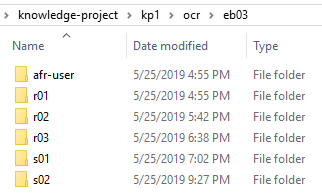

Print Edition Folder
Subdivisions of the print editions for digitization.
Each print edition is large, with 20-29 volumes of 1,000 pages each. The entries within each edition are arranged alphabetically. We retain this semantic organizational scheme and further subdivide the letters into sections of 150-250 pages to process as a group.
The folder structure reflects this. The print edition folders
(eb03, eb07, eb09,
and eb11) contain subfolders for sections whose names begins with the entry letter, followed by a two-digit
number referring to the first, second, third, and so on, sequence of 150-250 pages of
the print text: a01, a02, a03, … .
Note: Print edition sections do not refer to page
numbers in the print volumes. They reference units of up to 250-pages
beginning with the first 250 pages of the of the entry-letter, the second 250-pages,
and so on. This shorthand makes it possible to find material without having to know
the specific print volume and page number details.

The other folders are alphabetical divisions of the print edition containing the section folders (r01, r02, r03, ... ).